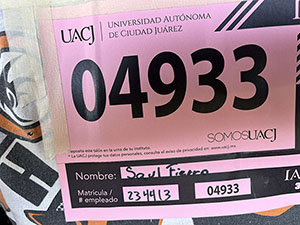
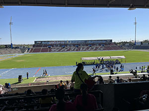

Bitacora
Alumno:Saul Andres Fierro Esqueda. Matricula: 234413
Animacion en CSS
CSS Permite animar la mayoria de elementos HTML sin usar Javascript con las siguientes propiedades:
Display
Todo elemento HTML en la web está representado por cajas. La propiedad display es la responsable de controlar cómo se ven esas cajas y de cómo interactúan entre ellas, pudiendo cambiar su apariencia modificando el valor.
Nuevas Propiedades de CSS
Este nivel de cambio convierte CSS3 en una tecnologia practicamente inedita comparada con versiones anteriores, para algunas propiedades se deben usar los prefijos "-moz-", "-o-" y "-webkit-" para funcionar en navegadores basados en motores Gecko y Webkit, como Firefozx, Safari y Google
CARRERA UNIVERSITARIA
El dia 4 de octubre se celebro la carrera universitaria por el aniversario 51 de la universidad
 